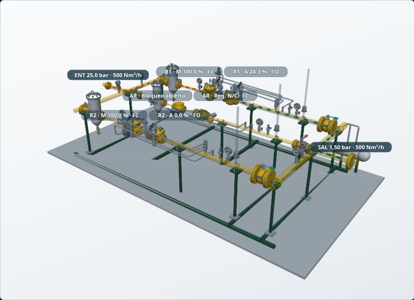
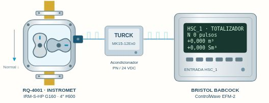
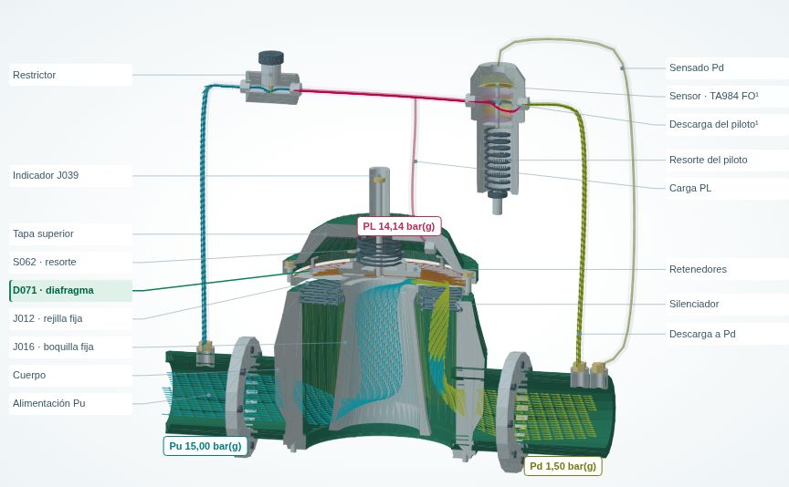

ERP 25/1,5
Regulación, transferencia entre ramas y actuación de protecciones.
Explorá equipos e instalaciones con modelos 3D y escenarios interactivos.

Regulación, transferencia entre ramas y actuación de protecciones.

Simulá reflujo por caída de presión y observá el registro del medidor.

Diafragma, rejilla y circuito restrictor–piloto en funcionamiento.